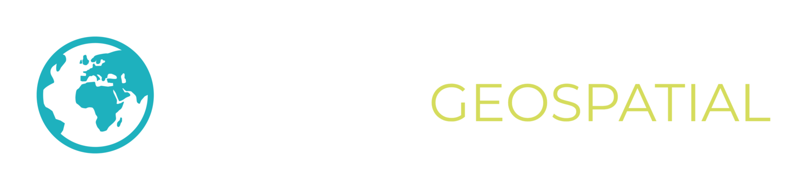

Here is an example of data driven extrusions using mapbox-gl. Note that this can be done at the basemap level as well using Studio. Use the right mouse button to manipulate the pitch and bearing. On mobile, use two-finger pivoting to manipulate the map.